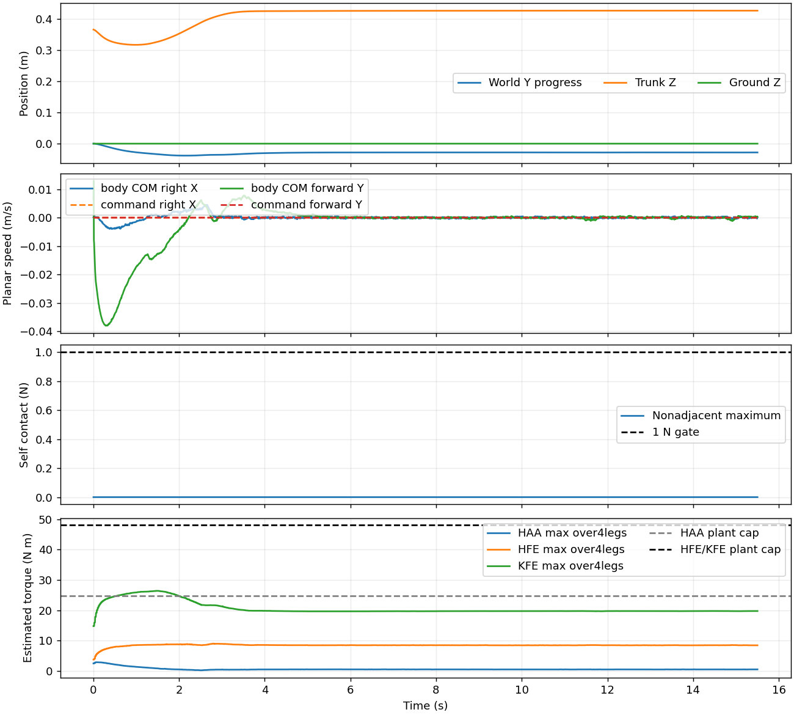
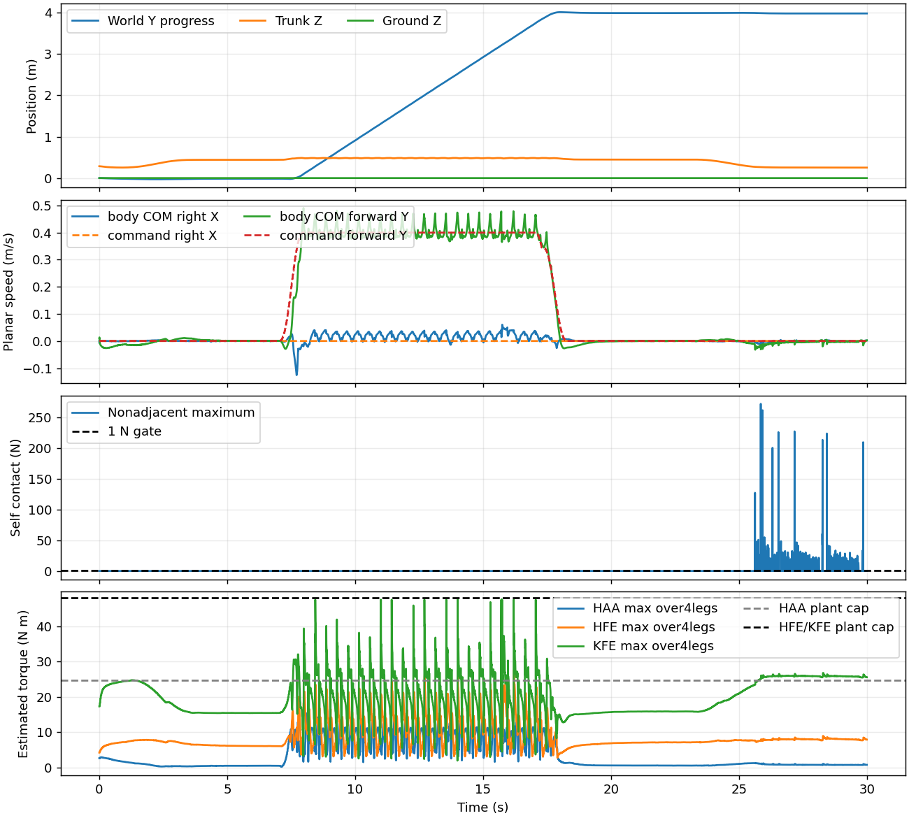
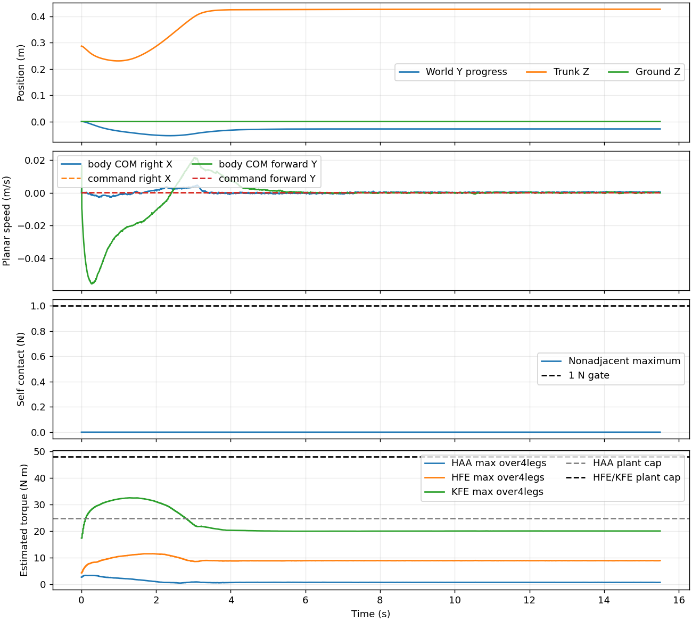

결과: AL7075 다리: model_16099 9/9 통과, 무릎 RMS/정격 최대 1.07 → 토크 최적화 후 8/9 통과, 1.04. TC4(Ti-6Al-4V) 다리: model_16099 6/9 통과, 무릎 RMS/정격 최대 1.23 → 토크 최적화 후 5/9 통과, 1.23. 모든 결과는 시뮬레이션이며 Jetson 번들 모델은 model_15699를 유지한다.
로봇: v6 CAD(2026-10-25)에서 다리 12개 링크의 질량·무게중심·관성만 바꾼 변형 (AL7075 29.58 kg, TC4 33.64 kg; v6 기본 25.64 kg). 시험: round2 suite job 2343 소스 그대로(ROS2 제어기 포함), seed 42, 각 조건 1회 실행.
토크 최적화 학습(round2 방식, 시작·보존 기준 모두 v6 model_16099):
전체 결과 · 모터·시험별 RMS · 생성 스크립트 · v6 기본 보고서
| 로봇 · 정책 | 질량 kg | 통과 | 무릎 RMS/정격 최대 | 고관절 roll RMS/정격 최대 | 무릎 RMS/정격 최대 (보행 / 전환 / WBC) | 정격 초과 시험 수 | 사양 최대 토크 초과 | 회전 오차 rad (≤0.6) | 요철 옆 이동 m (≤0.70) | 발 Fz p99.9 N | 발 Fz 최대 N |
|---|---|---|---|---|---|---|---|---|---|---|---|
| v6 기본 (알루미늄 다리) · model_16099 | 25.64 | 9/9 | 0.91 | 0.77 | 0.91 / 0.73 / 0.84 | 0 | 0 | 0.200 | 0.650 | 399.5 | 1234 |
| AL7075 다리 · model_16099 | 29.58 | 9/9 | 1.07 | 0.86 | 1.03 / 0.90 / 1.11 | 4 | 0 | 0.225 | 0.302 | 447.1 | 1146 |
| AL7075 다리 · 토크 최적화 model_16499 | 29.58 | 8/9 | 1.04 | 0.84 | 0.99 / 0.85 / 1.10 | 1 | 0 | 0.162 | 0.126 | 423.8 | 973 |
| TC4(Ti-6Al-4V) 다리 · model_16099 | 33.64 | 6/9 | 1.23 | 0.96 | 1.17 / - / 1.23 | 9 | 0 | 0.238 | 0.277 | 500.7 | 1579 |
| TC4(Ti-6Al-4V) 다리 · 토크 최적화 model_16499 | 33.64 | 5/9 | 1.23 | 0.85 | 1.13 / - / 1.23 | 7 | 0 | 0.118 | 0.826 | 516.2 | 1558 |
정격: 고관절 roll(HAA) 8.3 N·m, 고관절 pitch(HFE)·무릎(KFE) 18 N·m. RMS는 각 시험의 전체 기록구간 값이다. 0.9 이상은 노란색, 1 초과는 빨간색이다. 제어 구간은 기록된 PD 게인으로 나눈다: Kp=0은 기립·앉기 WBC가 토크를 직접 내는 구간, Kp=300은 보행 정책 구간, 그 사이는 두 제어기를 섞는 전환 구간이다. 토크 최적화 학습은 보행 정책만 바꾸므로 WBC 구간 토크는 바뀌지 않는다.
관절 종류별 최대 RMS/정격: 고관절 roll 0.86 (측면 이동 RR_HAA, 7.2/8.3 N·m) · 고관절 pitch 0.68 (후진 FL_HFE, 12.2/18.0 N·m) · 무릎 1.07 (18 cm 낮추기·기립·보행·정지 RR_KFE, 19.2/18.0 N·m)
| 시험 | FL_HAA | FL_HFE | FL_KFE | FR_HAA | FR_HFE | FR_KFE | RL_HAA | RL_HFE | RL_KFE | RR_HAA | RR_HFE | RR_KFE |
|---|---|---|---|---|---|---|---|---|---|---|---|---|
| 평지 전진 | 0.72 | 0.61 | 0.95 | 0.77 | 0.39 | 0.75 | 0.62 | 0.36 | 0.81 | 0.43 | 0.36 | 1.03 |
| 정지·재출발 | 0.67 | 0.52 | 0.90 | 0.71 | 0.36 | 0.72 | 0.58 | 0.36 | 0.82 | 0.45 | 0.35 | 0.99 |
| 후진 | 0.46 | 0.68 | 0.68 | 0.69 | 0.54 | 0.63 | 0.61 | 0.57 | 0.93 | 0.63 | 0.57 | 0.76 |
| 측면 이동 | 0.61 | 0.44 | 0.90 | 0.80 | 0.33 | 0.69 | 0.62 | 0.41 | 0.91 | 0.86 | 0.20 | 1.01 |
| 제자리 회전 | 0.57 | 0.24 | 0.78 | 0.54 | 0.16 | 0.69 | 0.49 | 0.33 | 0.89 | 0.58 | 0.20 | 0.92 |
| 1–3.5 cm 요철 | 0.72 | 0.59 | 0.93 | 0.75 | 0.36 | 0.73 | 0.60 | 0.34 | 0.81 | 0.42 | 0.35 | 1.02 |
| 기립 유지 | 0.03 | 0.32 | 0.60 | 0.03 | 0.34 | 0.63 | 0.04 | 0.23 | 0.82 | 0.07 | 0.22 | 0.87 |
| 10 cm 낮추기·기립·보행·정지 | 0.42 | 0.46 | 0.76 | 0.45 | 0.34 | 0.70 | 0.36 | 0.31 | 0.90 | 0.26 | 0.28 | 1.00 |
| 18 cm 낮추기·기립·보행·정지 | 0.42 | 0.46 | 0.78 | 0.45 | 0.36 | 0.72 | 0.36 | 0.33 | 0.97 | 0.27 | 0.30 | 1.07 |
무릎 RMS/정격 최대, 제어 구간별:
| 시험 | 보행 정책 (Kp=300) | 전환 | 기립·앉기 WBC (Kp=0) | 구간 길이 s (보행/전환/WBC) |
|---|---|---|---|---|
| 평지 전진 | 1.03 | - | - | 14.0 / 0 / 0 |
| 정지·재출발 | 0.99 | - | - | 24.0 / 0 / 0 |
| 후진 | 0.93 | - | - | 14.0 / 0 / 0 |
| 측면 이동 | 1.01 | - | - | 14.0 / 0 / 0 |
| 제자리 회전 | 0.92 | - | - | 14.0 / 0 / 0 |
| 1–3.5 cm 요철 | 1.02 | - | - | 24.0 / 0 / 0 |
| 기립 유지 | - | - | 0.87 | 0 / 0 / 12.0 |
| 10 cm 낮추기·기립·보행·정지 | 1.01 | 0.90 | 1.00 | 9.3 / 2.0 / 18.7 |
| 18 cm 낮추기·기립·보행·정지 | 1.01 | 0.90 | 1.11 | 9.3 / 2.0 / 18.7 |
관절 종류별 최대 RMS/정격: 고관절 roll 0.84 (평지 전진 FR_HAA, 7.0/8.3 N·m) · 고관절 pitch 0.65 (후진 FL_HFE, 11.7/18.0 N·m) · 무릎 1.04 (18 cm 낮추기·기립·보행·정지 RR_KFE, 18.7/18.0 N·m)
| 시험 | FL_HAA | FL_HFE | FL_KFE | FR_HAA | FR_HFE | FR_KFE | RL_HAA | RL_HFE | RL_KFE | RR_HAA | RR_HFE | RR_KFE |
|---|---|---|---|---|---|---|---|---|---|---|---|---|
| 평지 전진 | 0.71 | 0.59 | 0.91 | 0.84 | 0.38 | 0.74 | 0.66 | 0.36 | 0.81 | 0.42 | 0.38 | 0.98 |
| 정지·재출발 | 0.64 | 0.51 | 0.87 | 0.75 | 0.36 | 0.71 | 0.61 | 0.35 | 0.81 | 0.42 | 0.35 | 0.94 |
| 후진 | 0.34 | 0.65 | 0.59 | 0.65 | 0.56 | 0.63 | 0.62 | 0.46 | 0.78 | 0.61 | 0.56 | 0.76 |
| 측면 이동 | 0.45 | 0.36 | 0.89 | 0.71 | 0.26 | 0.69 | 0.55 | 0.33 | 0.85 | 0.74 | 0.19 | 0.92 |
| 제자리 회전 | 0.41 | 0.30 | 0.78 | 0.49 | 0.18 | 0.66 | 0.41 | 0.26 | 0.82 | 0.56 | 0.19 | 0.80 |
| 1–3.5 cm 요철 | 0.70 | 0.57 | 0.91 | 0.79 | 0.38 | 0.75 | 0.62 | 0.41 | 0.84 | 0.46 | 0.40 | 0.99 |
| 기립 유지 | 0.03 | 0.32 | 0.60 | 0.03 | 0.34 | 0.63 | 0.04 | 0.23 | 0.82 | 0.07 | 0.22 | 0.87 |
| 10 cm 낮추기·기립·보행·정지 | 0.43 | 0.46 | 0.74 | 0.49 | 0.32 | 0.71 | 0.39 | 0.29 | 0.92 | 0.25 | 0.31 | 0.97 |
| 18 cm 낮추기·기립·보행·정지 | 0.42 | 0.46 | 0.76 | 0.49 | 0.34 | 0.72 | 0.39 | 0.32 | 1.00 | 0.25 | 0.34 | 1.04 |
무릎 RMS/정격 최대, 제어 구간별:
| 시험 | 보행 정책 (Kp=300) | 전환 | 기립·앉기 WBC (Kp=0) | 구간 길이 s (보행/전환/WBC) |
|---|---|---|---|---|
| 평지 전진 | 0.98 | - | - | 14.0 / 0 / 0 |
| 정지·재출발 | 0.94 | - | - | 24.0 / 0 / 0 |
| 후진 | 0.78 | - | - | 14.0 / 0 / 0 |
| 측면 이동 | 0.92 | - | - | 14.0 / 0 / 0 |
| 제자리 회전 | 0.82 | - | - | 14.0 / 0 / 0 |
| 1–3.5 cm 요철 | 0.99 | - | - | 24.0 / 0 / 0 |
| 기립 유지 | - | - | 0.87 | 0 / 0 / 12.0 |
| 10 cm 낮추기·기립·보행·정지 | 0.98 | 0.85 | 0.98 | 9.3 / 2.0 / 18.7 |
| 18 cm 낮추기·기립·보행·정지 | 0.98 | 0.82 | 1.10 | 9.3 / 2.0 / 18.7 |
관절 종류별 최대 RMS/정격: 고관절 roll 0.96 (측면 이동 RR_HAA, 8.0/8.3 N·m) · 고관절 pitch 0.77 (후진 FL_HFE, 13.9/18.0 N·m) · 무릎 1.23 (18 cm 낮추기·기립·보행·정지 RR_KFE, 22.1/18.0 N·m)
| 시험 | FL_HAA | FL_HFE | FL_KFE | FR_HAA | FR_HFE | FR_KFE | RL_HAA | RL_HFE | RL_KFE | RR_HAA | RR_HFE | RR_KFE |
|---|---|---|---|---|---|---|---|---|---|---|---|---|
| 평지 전진 | 0.80 | 0.66 | 1.05 | 0.83 | 0.43 | 0.83 | 0.64 | 0.39 | 0.94 | 0.44 | 0.38 | 1.17 |
| 정지·재출발 | 0.72 | 0.56 | 0.98 | 0.79 | 0.39 | 0.81 | 0.61 | 0.42 | 0.99 | 0.46 | 0.36 | 1.11 |
| 후진 | 0.55 | 0.77 | 0.77 | 0.71 | 0.61 | 0.66 | 0.60 | 0.66 | 1.10 | 0.72 | 0.65 | 0.85 |
| 측면 이동 | 0.61 | 0.48 | 1.02 | 0.92 | 0.30 | 0.77 | 0.66 | 0.46 | 1.05 | 0.96 | 0.25 | 1.12 |
| 제자리 회전 | 0.65 | 0.32 | 0.85 | 0.61 | 0.19 | 0.78 | 0.48 | 0.44 | 1.07 | 0.65 | 0.24 | 1.02 |
| 1–3.5 cm 요철 | 0.78 | 0.64 | 1.03 | 0.80 | 0.45 | 0.83 | 0.62 | 0.46 | 0.98 | 0.47 | 0.41 | 1.15 |
| 기립 유지 | 0.03 | 0.46 | 0.72 | 0.05 | 0.45 | 0.71 | 0.05 | 0.32 | 1.08 | 0.08 | 0.32 | 1.07 |
| 10 cm 낮추기·기립·보행·정지 | 0.03 | 0.47 | 0.74 | 0.05 | 0.47 | 0.74 | 0.08 | 0.34 | 1.14 | 0.09 | 0.34 | 1.14 |
| 18 cm 낮추기·기립·보행·정지 | 0.03 | 0.47 | 0.73 | 0.05 | 0.49 | 0.75 | 0.10 | 0.38 | 1.22 | 0.12 | 0.40 | 1.23 |
무릎 RMS/정격 최대, 제어 구간별:
| 시험 | 보행 정책 (Kp=300) | 전환 | 기립·앉기 WBC (Kp=0) | 구간 길이 s (보행/전환/WBC) |
|---|---|---|---|---|
| 평지 전진 | 1.17 | - | - | 14.0 / 0 / 0 |
| 정지·재출발 | 1.11 | - | - | 24.0 / 0 / 0 |
| 후진 | 1.10 | - | - | 14.0 / 0 / 0 |
| 측면 이동 | 1.12 | - | - | 14.0 / 0 / 0 |
| 제자리 회전 | 1.07 | - | - | 14.0 / 0 / 0 |
| 1–3.5 cm 요철 | 1.15 | - | - | 24.0 / 0 / 0 |
| 기립 유지 | - | - | 1.08 | 0 / 0 / 12.0 |
| 10 cm 낮추기·기립·보행·정지 | - | - | 1.14 | 0 / 0 / 15.5 |
| 18 cm 낮추기·기립·보행·정지 | - | - | 1.23 | 0 / 0 / 15.5 |
관절 종류별 최대 RMS/정격: 고관절 roll 0.85 (평지 전진 FR_HAA, 7.1/8.3 N·m) · 고관절 pitch 0.67 (후진 RR_HFE, 12.0/18.0 N·m) · 무릎 1.23 (18 cm 낮추기·기립·보행·정지 RR_KFE, 22.1/18.0 N·m)
| 시험 | FL_HAA | FL_HFE | FL_KFE | FR_HAA | FR_HFE | FR_KFE | RL_HAA | RL_HFE | RL_KFE | RR_HAA | RR_HFE | RR_KFE |
|---|---|---|---|---|---|---|---|---|---|---|---|---|
| 평지 전진 | 0.72 | 0.59 | 1.00 | 0.85 | 0.43 | 0.86 | 0.60 | 0.40 | 0.98 | 0.37 | 0.36 | 1.12 |
| 정지·재출발 | 0.66 | 0.50 | 0.95 | 0.80 | 0.37 | 0.83 | 0.58 | 0.38 | 0.96 | 0.41 | 0.34 | 1.06 |
| 후진 | 0.47 | 0.61 | 0.75 | 0.74 | 0.58 | 0.73 | 0.67 | 0.53 | 0.87 | 0.60 | 0.67 | 0.69 |
| 측면 이동 | 0.53 | 0.36 | 1.01 | 0.84 | 0.24 | 0.81 | 0.59 | 0.36 | 0.93 | 0.81 | 0.36 | 0.93 |
| 제자리 회전 | 0.56 | 0.28 | 0.87 | 0.64 | 0.18 | 0.83 | 0.48 | 0.26 | 0.93 | 0.60 | 0.24 | 0.89 |
| 1–3.5 cm 요철 | 0.71 | 0.61 | 1.00 | 0.83 | 0.48 | 0.88 | 0.61 | 0.45 | 0.97 | 0.48 | 0.45 | 1.13 |
| 기립 유지 | 0.03 | 0.46 | 0.72 | 0.05 | 0.45 | 0.71 | 0.05 | 0.32 | 1.08 | 0.08 | 0.32 | 1.07 |
| 10 cm 낮추기·기립·보행·정지 | 0.03 | 0.47 | 0.74 | 0.05 | 0.47 | 0.74 | 0.08 | 0.34 | 1.14 | 0.09 | 0.34 | 1.14 |
| 18 cm 낮추기·기립·보행·정지 | 0.03 | 0.47 | 0.73 | 0.05 | 0.49 | 0.75 | 0.10 | 0.38 | 1.22 | 0.12 | 0.40 | 1.23 |
무릎 RMS/정격 최대, 제어 구간별:
| 시험 | 보행 정책 (Kp=300) | 전환 | 기립·앉기 WBC (Kp=0) | 구간 길이 s (보행/전환/WBC) |
|---|---|---|---|---|
| 평지 전진 | 1.12 | - | - | 14.0 / 0 / 0 |
| 정지·재출발 | 1.06 | - | - | 24.0 / 0 / 0 |
| 후진 | 0.87 | - | - | 14.0 / 0 / 0 |
| 측면 이동 | 1.01 | - | - | 14.0 / 0 / 0 |
| 제자리 회전 | 0.93 | - | - | 14.0 / 0 / 0 |
| 1–3.5 cm 요철 | 1.13 | - | - | 24.0 / 0 / 0 |
| 기립 유지 | - | - | 1.08 | 0 / 0 / 12.0 |
| 10 cm 낮추기·기립·보행·정지 | - | - | 1.14 | 0 / 0 / 15.5 |
| 18 cm 낮추기·기립·보행·정지 | - | - | 1.23 | 0 / 0 / 15.5 |
--seed로 바뀌지 않는다.scontrol update MinMemoryNode=20480으로 메모리 요청을 20G로 낮춰 실행했다(sacct MaxRSS 18089204 KiB·19846816 KiB, 약 17.3·18.9 GiB). 복사된 launcher.sbatch에는 원래 요청값 24G가 남아 있다.


